This function removes all individual participant data from a generalized additive model object, while keeping aggregated quantities. The resulting object can be shared without exposing individual participant data.
Usage
strip_rawdata(model, path = NULL, save_ranges = TRUE, ...)
# S3 method for list
strip_rawdata(model, path = NULL, save_ranges = TRUE, ...)
# S3 method for gamm
strip_rawdata(model, path = NULL, save_ranges = TRUE, ...)
# S3 method for bam
strip_rawdata(model, path = NULL, save_ranges = TRUE, ...)
# S3 method for gam
strip_rawdata(model, path = NULL, save_ranges = TRUE, ...)Arguments
- model
A model fitted using
mgcv::gam,mgcv::bam,mgcv::gamm, orgamm4::gamm4.- path
Optional path in which to save the object as a
.rdsfile.- save_ranges
Logical specifying whether to save the ranges of each variable used by the model. For numeric variables this amounts to the minimum and maximum, and for factors all levels are saved. The values will be in the list element
var.summaryof the returned object.- ...
Other arguments (not used).
Details
Thin plate regression splines (bs='tp' and bs='ts') and Duchon splines bs='ds'
are currently not supported, since for these splines mgcv
requires the unique values of the explanatory variables for each smooth term for the predict
method to work. Future updates to this package will fix this.
Methods (by class)
strip_rawdata(list): Strip rawdata from list object returned by gamm4strip_rawdata(gamm): Strip rawdata from gamm objectstrip_rawdata(bam): Strip rawdata from gam objectstrip_rawdata(gam): Strip rawdata from gam object
Examples
library(metagam)
library(mgcv)
## Create 5 datasets
set.seed(1234)
datasets <- lapply(1:5, function(x) gamSim(scale = 5, verbose = FALSE))
## Fit a GAM in each dataset, then use strip_rawdata() to remove
## individual participant data
models <- lapply(datasets, function(dat){
## This uses the gam() function from mgcv
model <- gam(y ~ s(x0, bs = "cr") + s(x1, bs = "cr") + s(x2, bs = "cr"), data = dat)
## This uses strip_rawdata() from metagam
strip_rawdata(model)
})
## Next, we meta-analyze the models.
## It is often most convenient to analyze a single term at a time. We focus on s(x1).
meta_analysis <- metagam(models, terms = "s(x1)", grid_size = 30)
## We can print some information
summary(meta_analysis)
#> Meta-analysis of GAMs from cohorts, using method FE.
#>
#> Smooth terms analyzed: s(x1).
#>
#>
#>
## We can plot the meta-analytic fit together with the individual fits
plot(meta_analysis)

plot(meta_analysis, ci = "pointwise")
 ## We can also compute p-values and simultaneous confidence intervals, by setting the nsim argument.
## For details, see the separate vignette.
if (FALSE) {
meta_analysis <- metagam(models, terms = "s(x0)", grid_size = 30, nsim = 1000)
summary(meta_analysis)
plot(meta_analysis, ci = "both")
plot(meta_analysis, ci = "simultaneous")
}
## We can also compute p-values and simultaneous confidence intervals, by setting the nsim argument.
## For details, see the separate vignette.
if (FALSE) {
meta_analysis <- metagam(models, terms = "s(x0)", grid_size = 30, nsim = 1000)
summary(meta_analysis)
plot(meta_analysis, ci = "both")
plot(meta_analysis, ci = "simultaneous")
}